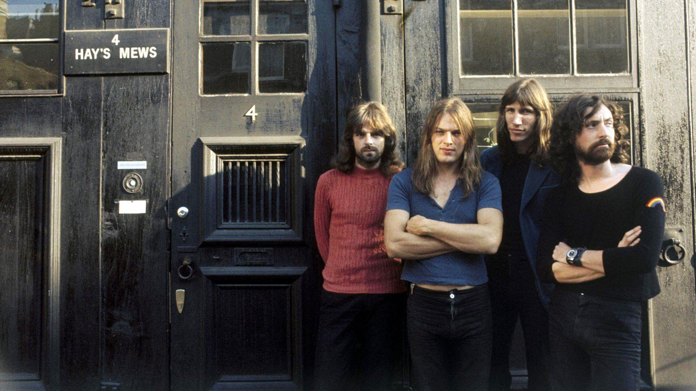

Pink Floyd
Pink Floyd fue un grupo de rock británico que cosechó gran popularidad gracias a su música psicodélica que, con el paso del tiempo, fue evolucionando hacia el rock progresivo y el rock sinfónico. Es conocido por sus canciones de contenido filosófico, la experimentación sónica, las innovadoras portadas de sus discos y sus elaborados espectáculos en vivo.
Es una de las bandas más importantes e influyentes de la escena del rock con más de 300 millones de álbumes vendidos en todo el mundo, de los cuales 74,5 millones fueron solo en los Estados Unidos.
Inicialmente el grupo estaba formado por el guitarrista Bob Klose, el baterista Nick Mason, el teclista y vocalista Richard Wright, el bajista y vocalista Roger Waters, y el guitarrista rítmico y vocalista principal Syd Barrett, quien se convirtió en el primer líder de la banda. Sin embargo, debido a su extraño comportamiento relacionado con el consumo de LSD, fue sustituido en 1968 por David Gilmour, lo que consolidó la formación clásica de Pink Floyd.
Pink Floyd comenzó con gran éxito en la escena underground londinense a finales de los años 60. Tras la salida de Syd Barrett, Roger Waters se convirtió en la fuerza dominante de la banda. Durante esta época, se grabaron álbumes icónicos como *The Dark Side of the Moon* (1973), *Wish You Were Here* (1975), *Animals* (1977) y *The Wall* (1979).
En 1985, Waters dejó Pink Floyd, pero el resto de los miembros, liderados por Gilmour, continuaron grabando y haciendo giras. Tras una disputa legal, Waters obtuvo los derechos sobre la imaginería de la banda, pero Gilmour, Mason y Wright continuaron con el nombre. La banda disfrutó de éxitos comerciales con *A Momentary Lapse of Reason* (1987) y *The Division Bell* (1994).
Aunque Waters se embarcó en una carrera como solista, los miembros restantes se reunieron en el concierto Live 8 en Londres en 2005, marcando una histórica reunión tras 24 años.
 Escuchar en Spotify
Escuchar en Spotify
 Escuchar en YouTube
Escuchar en YouTube